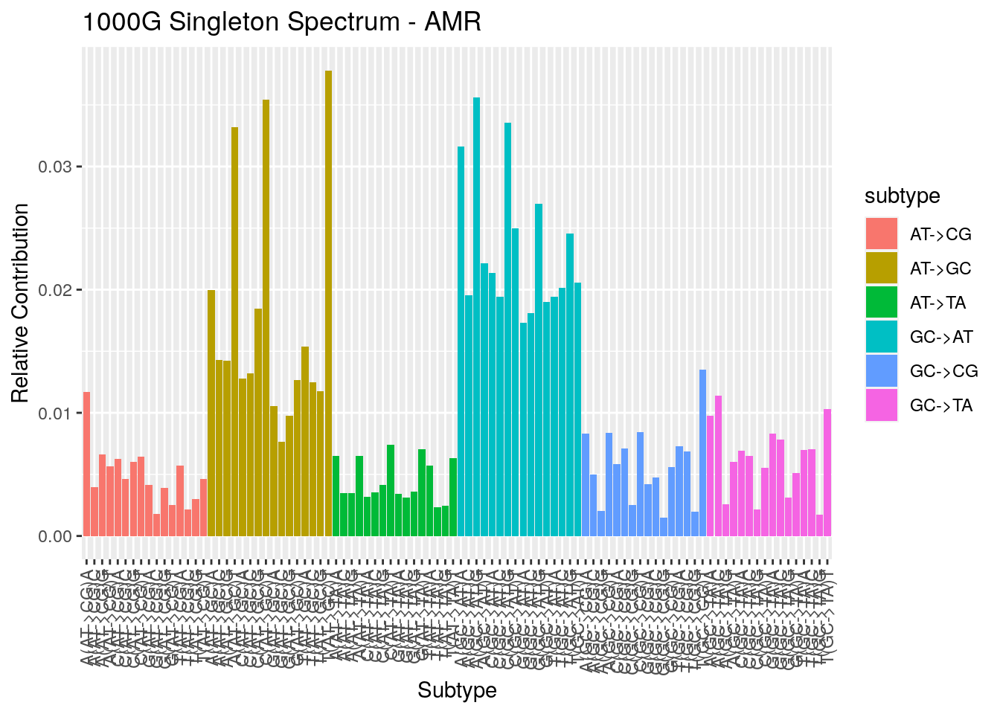
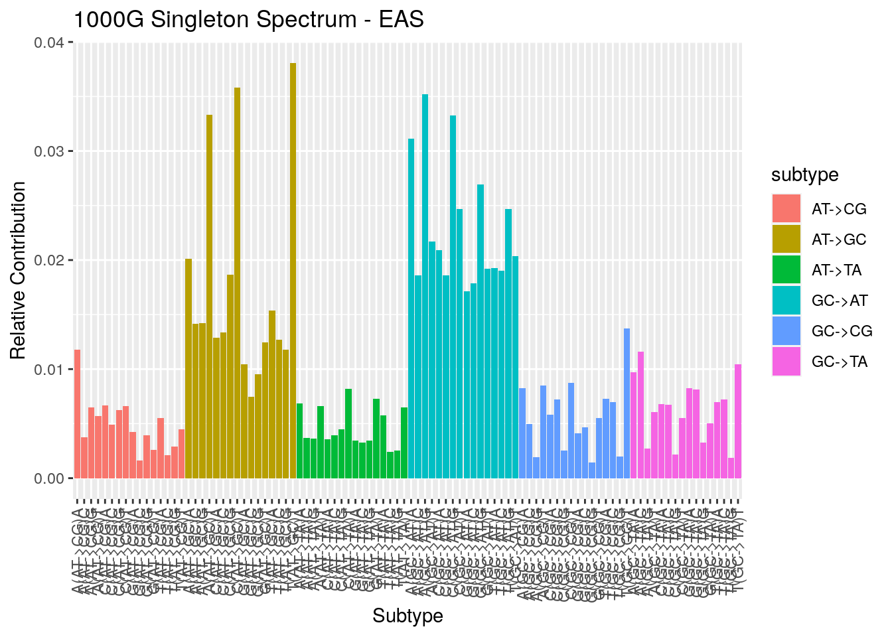

1000G_summary_stats
Andy Beck
2021-11-02
Last updated: 2021-12-14
Checks: 7 0
Knit directory: LSCI/
This reproducible R Markdown analysis was created with workflowr (version 1.6.2). The Checks tab describes the reproducibility checks that were applied when the results were created. The Past versions tab lists the development history.
Great! Since the R Markdown file has been committed to the Git repository, you know the exact version of the code that produced these results.
Great job! The global environment was empty. Objects defined in the global environment can affect the analysis in your R Markdown file in unknown ways. For reproduciblity it’s best to always run the code in an empty environment.
The command set.seed(20211101) was run prior to running the code in the R Markdown file. Setting a seed ensures that any results that rely on randomness, e.g. subsampling or permutations, are reproducible.
Great job! Recording the operating system, R version, and package versions is critical for reproducibility.
Nice! There were no cached chunks for this analysis, so you can be confident that you successfully produced the results during this run.
Great job! Using relative paths to the files within your workflowr project makes it easier to run your code on other machines.
Great! You are using Git for version control. Tracking code development and connecting the code version to the results is critical for reproducibility.
The results in this page were generated with repository version 4b45388. See the Past versions tab to see a history of the changes made to the R Markdown and HTML files.
Note that you need to be careful to ensure that all relevant files for the analysis have been committed to Git prior to generating the results (you can use wflow_publish or wflow_git_commit). workflowr only checks the R Markdown file, but you know if there are other scripts or data files that it depends on. Below is the status of the Git repository when the results were generated:
Ignored files:
Ignored: .Rhistory
Ignored: .Rproj.user/
Ignored: analysis/1000G_single_postion_comp_cache/
Ignored: analysis/disqus.html
Untracked files:
Untracked: BRIDGES_summary_stats-tikzDictionary
Untracked: output/tikz/
Unstaged changes:
Modified: analysis/BRIDGES_summary_stats.Rmd
Note that any generated files, e.g. HTML, png, CSS, etc., are not included in this status report because it is ok for generated content to have uncommitted changes.
These are the previous versions of the repository in which changes were made to the R Markdown (analysis/1000G_summary_stats.Rmd) and HTML (docs/1000G_summary_stats.html) files. If you’ve configured a remote Git repository (see ?wflow_git_remote), click on the hyperlinks in the table below to view the files as they were in that past version.
| File | Version | Author | Date | Message |
|---|---|---|---|---|
| Rmd | 4b45388 | Andy Beck | 2021-12-14 | summary stats |
| html | acc1572 | Andy Beck | 2021-12-13 | Build site. |
| Rmd | a59cb9a | Andy Beck | 2021-12-13 | Add 3mer spectra |
| html | bcee610 | Andy Beck | 2021-11-09 | update site to include disqus |
| html | eeb92e1 | Andy Beck | 2021-11-04 | Build site. |
| Rmd | 98ee097 | Andy Beck | 2021-11-04 | cleanup |
| html | 98ee097 | Andy Beck | 2021-11-04 | cleanup |
1000G Summary Statistics
Introduction
The purpose of this document is to organize statistics regarding the 1000G data set that might be of interest that don’t fall into the other documents.
Singletons per Sample
Below we plot the density of the number of singletons we observe in each sample. First we’ll look at all 2,504 individuals across the five super-populations
get_singletons_per_subject <- function(singleton_dir){
awk_cmd <- paste0("awk -F, '{count[$6]++}END{for(key in count)print(key, count[key])}' ",
singleton_dir,
"chr*_annotated.csv")
df <- vroom::vroom(pipe(awk_cmd), col_names = c("ID", "n_singletons"))
return(df)
}
# df_ALL <- get_singletons_per_subject("/net/snowwhite/home/beckandy/research/1000G_LSCI/output/singletons/ALL/")
# write_csv(df_ALL, "/net/snowwhite/home/beckandy/research/1000G_LSCI/output/singletons_per_subject_ALL.csv")
df_ALL <- read_csv("/net/snowwhite/home/beckandy/research/1000G_LSCI/output/singletons_per_subject_ALL.csv",
col_types = cols())
df_ALL %>%
ggplot(aes(x = n_singletons)) +
geom_density() +
ggtitle("Singletons per Subject: 1000G",
paste0("Mean: ", round(mean(df_ALL$n_singletons), 2),
", SD: ", round(sd(df_ALL$n_singletons), 2),
", Min: " , min(df_ALL$n_singletons) ,
", Max: ", max(df_ALL$n_singletons) )
)+
xlab("Number of Singletons")
| Version | Author | Date |
|---|---|---|
| 98ee097 | Andy Beck | 2021-11-04 |
Here we can see that while most of the subjects in 1000G have between 10,000 and 30,000 singletons, we see a few outliers in both tails. Let’s see what each of the five super-populations looks like:
sample_variables <- read_tsv("/net/snowwhite/home/beckandy/research/1000G_LSCI/reference_data/1000G_samples.tsv",
col_types = cols())
samples_ALL <- sample_variables %>%
rename(ID = `Sample name`) %>%
right_join(df_ALL, by = "ID")
samples_AFR <- samples_ALL %>% filter(`Superpopulation code` == "AFR")
samples_AMR <- samples_ALL %>% filter(`Superpopulation code` == "AMR")
samples_EAS <- samples_ALL %>% filter(`Superpopulation code` == "EAS")
samples_EUR <- samples_ALL %>% filter(`Superpopulation code` == "EUR")
samples_SAS <- samples_ALL %>% filter(`Superpopulation code` == "SAS") samples_ALL %>%
ggplot(aes(x = n_singletons, fill = `Superpopulation code`)) +
geom_density(alpha=0.3) +
ggtitle("Samples per Subject: 1000G Super-populations")
| Version | Author | Date |
|---|---|---|
| 98ee097 | Andy Beck | 2021-11-04 |
Singletons per sample within sub-populations
AFR
samples_AFR %>%
ggplot(aes(x = n_singletons, fill = `Population code`)) +
geom_density(alpha = 0.3) +
ggtitle("Samples per Subject: 1000G AFR") +
scale_fill_manual(values = as.vector(cols25(n = 7)))
| Version | Author | Date |
|---|---|---|
| 98ee097 | Andy Beck | 2021-11-04 |
Now that we have sample-level information along with the number of singletons, we might also want to look at some more basic summary statistic information (for example: how many subjects do we have within each super-population? average number of singletons per (super)population? etc).
Samples per Superpopulation
knitr::kable(table(samples_ALL$`Superpopulation code`))| Var1 | Freq |
|---|---|
| AFR | 661 |
| AMR | 347 |
| EAS | 504 |
| EUR | 503 |
| SAS | 489 |
Samples per Population
AFR
knitr::kable(table(samples_AFR$`Population code`))| Var1 | Freq |
|---|---|
| ACB | 96 |
| ASW | 61 |
| ESN | 99 |
| GWD | 113 |
| LWK | 99 |
| MSL | 85 |
| YRI | 108 |
AMR
knitr::kable(table(samples_AMR$`Population code`))| Var1 | Freq |
|---|---|
| CLM | 94 |
| MXL | 64 |
| PEL | 85 |
| PUR | 104 |
EAS
knitr::kable(table(samples_EAS$`Population code`))| Var1 | Freq |
|---|---|
| CDX | 93 |
| CHB | 103 |
| CHS | 105 |
| JPT | 104 |
| KHV | 99 |
EUR
knitr::kable(table(samples_EUR$`Population code`))| Var1 | Freq |
|---|---|
| CEU | 99 |
| FIN | 99 |
| GBR | 91 |
| IBS | 107 |
| TSI | 107 |
SAS
knitr::kable(table(samples_SAS$`Population code`))| Var1 | Freq |
|---|---|
| BEB | 86 |
| GIH | 103 |
| ITU | 102 |
| PJL | 96 |
| STU | 102 |
3mer Spectrum
get_subtype_3mer <- function(subtype, pop){
nucs <- c("A", "C", "G", "T")
data_dir <- "/net/snowwhite/home/beckandy/research/1000G_LSCI/output/singletons"
awk_cmd <- paste0("awk '{count[substr($1,10,3)]++}END{for(key in count)print(key, count[key])}' ",
data_dir, "/", pop, "/", subtype, ".txt")
df <- vroom::vroom(pipe(awk_cmd), col_names = c("Motif", "n"), show_col_types = FALSE) %>%
rowwise() %>%
filter(str_sub(Motif, 1, 1) %in% nucs,
str_sub(Motif, -1) %in% nucs) %>%
mutate(subtype = str_replace_all(subtype,"_","->")) %>%
mutate(Motif = paste0(str_sub(Motif, 1, 1), "(", str_remove(subtype, "cpg->"), ")", str_sub(Motif, 3, 3)))
return(df)
}
get_all_3mer <- function(pop){
subtypes <- c("AT_CG", "AT_GC", "AT_TA", "GC_AT", "GC_TA", "GC_CG", "cpg_GC_AT", "cpg_GC_TA", "cpg_GC_CG")
df_list <- vector("list", length(subtypes))
names(df_list) <- subtypes
for(st in subtypes){
df_list[[st]] <- get_subtype_3mer(st, pop)
}
return(bind_rows(df_list))
}ALL
sp <- "ALL"
df_ALL <- get_all_3mer(sp)
df_ALL <- df_ALL %>%
mutate(subtype = str_sub(Motif, 3, 8)) %>%
ungroup() %>%
mutate(pct = n / sum(n))
p <- df_ALL %>%
arrange(subtype, Motif) %>%
mutate(Motif = factor(Motif, levels=Motif)) %>%
ggplot(aes(x = Motif, y = pct, fill = subtype, order = subtype)) +
geom_col() +
theme(axis.text.x = element_text(angle = 90, vjust = 0.5, hjust=1)) +
xlab("Subtype") + ylab("Relative Contribution") + ggtitle(paste0("1000G Singleton Spectrum - ", sp))
p
| Version | Author | Date |
|---|---|---|
| acc1572 | Andy Beck | 2021-12-13 |
AFR
sp <- "AFR"
df_AFR <- get_all_3mer(sp)
df_AFR <- df_AFR %>%
mutate(subtype = str_sub(Motif, 3, 8)) %>%
ungroup() %>%
mutate(pct = n / sum(n))
p <- df_AFR %>%
arrange(subtype, Motif) %>%
mutate(Motif = factor(Motif, levels=Motif)) %>%
ggplot(aes(x = Motif, y = pct, fill = subtype, order = subtype)) +
geom_col() +
theme(axis.text.x = element_text(angle = 90, vjust = 0.5, hjust=1)) +
xlab("Subtype") + ylab("Relative Contribution") + ggtitle(paste0("1000G Singleton Spectrum - ", sp))
p
| Version | Author | Date |
|---|---|---|
| acc1572 | Andy Beck | 2021-12-13 |
AMR
sp <- "AMR"
df_AMR <- get_all_3mer(sp)
df_AMR <- df_AMR %>%
mutate(subtype = str_sub(Motif, 3, 8)) %>%
ungroup() %>%
mutate(pct = n / sum(n))
p <- df_AMR %>%
arrange(subtype, Motif) %>%
mutate(Motif = factor(Motif, levels=Motif)) %>%
ggplot(aes(x = Motif, y = pct, fill = subtype, order = subtype)) +
geom_col() +
theme(axis.text.x = element_text(angle = 90, vjust = 0.5, hjust=1)) +
xlab("Subtype") + ylab("Relative Contribution") + ggtitle(paste0("1000G Singleton Spectrum - ", sp))
p
| Version | Author | Date |
|---|---|---|
| acc1572 | Andy Beck | 2021-12-13 |
EAS
sp <- "EAS"
df_EAS <- get_all_3mer(sp)
df_EAS <- df_EAS %>%
mutate(subtype = str_sub(Motif, 3, 8)) %>%
ungroup() %>%
mutate(pct = n / sum(n))
p <- df_EAS %>%
arrange(subtype, Motif) %>%
mutate(Motif = factor(Motif, levels=Motif)) %>%
ggplot(aes(x = Motif, y = pct, fill = subtype, order = subtype)) +
geom_col() +
theme(axis.text.x = element_text(angle = 90, vjust = 0.5, hjust=1)) +
xlab("Subtype") + ylab("Relative Contribution") + ggtitle(paste0("1000G Singleton Spectrum - ", sp))
p
| Version | Author | Date |
|---|---|---|
| acc1572 | Andy Beck | 2021-12-13 |
EUR
sp <- "EUR"
df_EUR <- get_all_3mer(sp)
df_EUR <- df_EUR %>%
mutate(subtype = str_sub(Motif, 3, 8)) %>%
ungroup() %>%
mutate(pct = n / sum(n))
p <- df_EUR %>%
arrange(subtype, Motif) %>%
mutate(Motif = factor(Motif, levels=Motif)) %>%
ggplot(aes(x = Motif, y = pct, fill = subtype, order = subtype)) +
geom_col() +
theme(axis.text.x = element_text(angle = 90, vjust = 0.5, hjust=1)) +
xlab("Subtype") + ylab("Relative Contribution") + ggtitle(paste0("1000G Singleton Spectrum - ", sp))
p
| Version | Author | Date |
|---|---|---|
| acc1572 | Andy Beck | 2021-12-13 |
SAS
sp <- "SAS"
df_SAS <- get_all_3mer(sp)
df_SAS <- df_SAS %>%
mutate(subtype = str_sub(Motif, 3, 7)) %>%
ungroup() %>%
mutate(pct = n / sum(n))
p <- df_SAS %>%
arrange(subtype, Motif) %>%
mutate(Motif = factor(Motif, levels=Motif)) %>%
ggplot(aes(x = Motif, y = pct, fill = subtype, order = subtype)) +
geom_col() +
theme(axis.text.x = element_text(angle = 90, vjust = 0.5, hjust=1)) +
xlab("Subtype") + ylab("Relative Contribution") + ggtitle(paste0("1000G Singleton Spectrum - ", sp))
p
| Version | Author | Date |
|---|---|---|
| acc1572 | Andy Beck | 2021-12-13 |
Relative Enrichment
AFR - EUR
df_AFR %>%
select(Motif, pct) %>%
full_join({df_EUR %>% select(Motif, pct, subtype)}, by = "Motif") %>%
rename(pct_AFR = pct.x, pct_EUR = pct.y) %>%
mutate(enrichment = pct_EUR / pct_AFR) %>%
arrange(subtype, Motif) %>%
mutate(Motif = factor(Motif, levels=Motif)) %>%
ggplot(aes(x = Motif, y = enrichment, colour = subtype)) +
geom_point() +
theme(axis.text.x = element_text(angle = 90, vjust = 0.5, hjust=1)) +
ggtitle("EUR / AFR Enrichment")df_AFR %>%
select(Motif, pct) %>%
full_join({df_EUR %>% select(Motif, pct, subtype)}, by = "Motif") %>%
rename(pct_AFR = pct.x, pct_EUR = pct.y) %>%
mutate(enrichment = pct_EUR / pct_AFR) %>%
arrange(desc(enrichment)) %>%
knitr::kable()| Motif | pct_AFR | pct_EUR | subtype | enrichment |
|---|---|---|---|---|
| G(AT->CG)C | 0.0016952 | 0.0020251 | AT->CG | 1.1946282 |
| C(AT->TA)C | 0.0034677 | 0.0037384 | AT->TA | 1.0780584 |
| C(GC->CG)G | 0.0023378 | 0.0025187 | GC->CG | 1.0774038 |
| C(AT->CG)C | 0.0045284 | 0.0048670 | AT->CG | 1.0747733 |
| G(AT->TA)G | 0.0032451 | 0.0034781 | AT->TA | 1.0717980 |
| T(GC->AT)C | 0.0189388 | 0.0202246 | GC->AT | 1.0678889 |
| G(AT->TA)A | 0.0032565 | 0.0034470 | AT->TA | 1.0585205 |
| C(AT->TA)G | 0.0041802 | 0.0044164 | AT->TA | 1.0565160 |
| C(AT->TA)A | 0.0032264 | 0.0033696 | AT->TA | 1.0444060 |
| G(AT->GC)G | 0.0093504 | 0.0097615 | AT->GC | 1.0439614 |
| T(AT->GC)A | 0.0148194 | 0.0154400 | AT->GC | 1.0418750 |
| T(AT->CG)T | 0.0046518 | 0.0048326 | AT->CG | 1.0388589 |
| C(AT->CG)G | 0.0060782 | 0.0062752 | AT->CG | 1.0324104 |
| G(AT->CG)A | 0.0042448 | 0.0043819 | AT->CG | 1.0322958 |
| A(GC->TA)C | 0.0108809 | 0.0112270 | GC->TA | 1.0318008 |
| C(AT->CG)A | 0.0063394 | 0.0065409 | AT->CG | 1.0317722 |
| T(AT->CG)A | 0.0058260 | 0.0060092 | AT->CG | 1.0314559 |
| A(AT->TA)G | 0.0034934 | 0.0036015 | AT->TA | 1.0309215 |
| G(AT->TA)C | 0.0030328 | 0.0031262 | AT->TA | 1.0308006 |
| C(GC->TA)A | 0.0070456 | 0.0072488 | GC->TA | 1.0288365 |
| T(AT->GC)G | 0.0114673 | 0.0117964 | AT->GC | 1.0286977 |
| G(AT->TA)T | 0.0067276 | 0.0069047 | AT->TA | 1.0263387 |
| T(GC->CG)G | 0.0019076 | 0.0019569 | GC->CG | 1.0258524 |
| A(GC->CG)G | 0.0019538 | 0.0019993 | GC->CG | 1.0232860 |
| C(AT->CG)T | 0.0064235 | 0.0065513 | AT->CG | 1.0198889 |
| A(AT->TA)C | 0.0033969 | 0.0034616 | AT->TA | 1.0190446 |
| C(AT->GC)T | 0.0350411 | 0.0356906 | AT->GC | 1.0185339 |
| T(AT->TA)C | 0.0023950 | 0.0024363 | AT->TA | 1.0172243 |
| T(GC->TA)C | 0.0070199 | 0.0071295 | GC->TA | 1.0156168 |
| A(AT->TA)A | 0.0066088 | 0.0067117 | AT->TA | 1.0155845 |
| T(AT->GC)C | 0.0121788 | 0.0123629 | AT->GC | 1.0151120 |
| C(AT->GC)G | 0.0183688 | 0.0186412 | AT->GC | 1.0148315 |
| T(GC->AT)T | 0.0202193 | 0.0205181 | GC->AT | 1.0147801 |
| A(AT->CG)T | 0.0059377 | 0.0060097 | AT->CG | 1.0121285 |
| A(GC->TA)T | 0.0061812 | 0.0062537 | GC->TA | 1.0117280 |
| T(AT->GC)T | 0.0380902 | 0.0385151 | AT->GC | 1.0111549 |
| T(AT->TA)G | 0.0025947 | 0.0026215 | AT->TA | 1.0103233 |
| C(AT->TA)T | 0.0074950 | 0.0075691 | AT->TA | 1.0098859 |
| A(GC->CG)A | 0.0084773 | 0.0085602 | GC->CG | 1.0097806 |
| G(GC->TA)C | 0.0078461 | 0.0079224 | GC->TA | 1.0097289 |
| A(GC->TA)A | 0.0100490 | 0.0101304 | GC->TA | 1.0080944 |
| T(AT->CG)C | 0.0021942 | 0.0022115 | AT->CG | 1.0078964 |
| C(GC->CG)A | 0.0057600 | 0.0057841 | GC->CG | 1.0041705 |
| G(GC->AT)T | 0.0184934 | 0.0185545 | GC->AT | 1.0033060 |
| C(AT->GC)C | 0.0129359 | 0.0129719 | AT->GC | 1.0027826 |
| G(GC->TA)T | 0.0052061 | 0.0052191 | GC->TA | 1.0024981 |
| G(GC->AT)G | 0.0271411 | 0.0271954 | GC->AT | 1.0020009 |
| G(GC->TA)A | 0.0085616 | 0.0085773 | GC->TA | 1.0018341 |
| C(GC->TA)T | 0.0057006 | 0.0057088 | GC->TA | 1.0014370 |
| A(AT->TA)T | 0.0065061 | 0.0065141 | AT->TA | 1.0012312 |
| T(GC->TA)A | 0.0070403 | 0.0070427 | GC->TA | 1.0003421 |
| G(GC->TA)G | 0.0031866 | 0.0031871 | GC->TA | 1.0001369 |
| T(GC->CG)C | 0.0069893 | 0.0069893 | GC->CG | 1.0000087 |
| G(GC->AT)C | 0.0172334 | 0.0172271 | GC->AT | 0.9996382 |
| G(AT->CG)T | 0.0026574 | 0.0026530 | AT->CG | 0.9983467 |
| G(AT->GC)A | 0.0103420 | 0.0103187 | AT->GC | 0.9977545 |
| T(GC->CG)T | 0.0138269 | 0.0137932 | GC->CG | 0.9975616 |
| T(AT->CG)G | 0.0030594 | 0.0030517 | AT->CG | 0.9975030 |
| A(GC->CG)T | 0.0086833 | 0.0086586 | GC->CG | 0.9971514 |
| T(GC->AT)A | 0.0195217 | 0.0194648 | GC->AT | 0.9970843 |
| A(GC->AT)T | 0.0218195 | 0.0217394 | GC->AT | 0.9963319 |
| C(AT->GC)A | 0.0126151 | 0.0125628 | AT->GC | 0.9958506 |
| T(GC->CG)A | 0.0073625 | 0.0073269 | GC->CG | 0.9951718 |
| A(GC->AT)C | 0.0193497 | 0.0192452 | GC->AT | 0.9946002 |
| T(GC->AT)G | 0.0250088 | 0.0248285 | GC->AT | 0.9927920 |
| T(AT->TA)T | 0.0064782 | 0.0064305 | AT->TA | 0.9926396 |
| A(GC->AT)G | 0.0361413 | 0.0358484 | GC->AT | 0.9918941 |
| A(AT->GC)C | 0.0136984 | 0.0135812 | AT->GC | 0.9914456 |
| A(AT->CG)A | 0.0120842 | 0.0119799 | AT->CG | 0.9913682 |
| C(GC->TA)C | 0.0065450 | 0.0064823 | GC->TA | 0.9904229 |
| G(AT->GC)C | 0.0072218 | 0.0071401 | AT->GC | 0.9886828 |
| A(GC->CG)C | 0.0050389 | 0.0049806 | GC->CG | 0.9884338 |
| C(GC->AT)G | 0.0338842 | 0.0334911 | GC->AT | 0.9883983 |
| G(AT->GC)T | 0.0124899 | 0.0123430 | AT->GC | 0.9882397 |
| A(AT->GC)A | 0.0197916 | 0.0195562 | AT->GC | 0.9881068 |
| G(AT->CG)G | 0.0040088 | 0.0039599 | AT->CG | 0.9878129 |
| G(GC->AT)A | 0.0169581 | 0.0167172 | GC->AT | 0.9857953 |
| T(GC->TA)G | 0.0018584 | 0.0018315 | GC->TA | 0.9855166 |
| C(GC->CG)C | 0.0070178 | 0.0069105 | GC->CG | 0.9847119 |
| A(AT->GC)G | 0.0140990 | 0.0138833 | AT->GC | 0.9846991 |
| C(GC->AT)T | 0.0250509 | 0.0246061 | GC->AT | 0.9822421 |
| C(GC->CG)T | 0.0086861 | 0.0085233 | GC->CG | 0.9812510 |
| T(AT->TA)A | 0.0060205 | 0.0059024 | AT->TA | 0.9803911 |
| T(GC->TA)T | 0.0106676 | 0.0104534 | GC->TA | 0.9799272 |
| C(GC->AT)C | 0.0188960 | 0.0184739 | GC->AT | 0.9776582 |
| G(GC->CG)G | 0.0014763 | 0.0014395 | GC->CG | 0.9750418 |
| A(AT->GC)T | 0.0339567 | 0.0328134 | AT->GC | 0.9663303 |
| C(GC->TA)G | 0.0022554 | 0.0021764 | GC->TA | 0.9649808 |
| A(GC->AT)A | 0.0322202 | 0.0310692 | GC->AT | 0.9642746 |
| A(GC->TA)G | 0.0026732 | 0.0025603 | GC->TA | 0.9577626 |
| C(GC->AT)A | 0.0215574 | 0.0205959 | GC->AT | 0.9553988 |
| A(AT->CG)G | 0.0070984 | 0.0067659 | AT->CG | 0.9531566 |
| G(GC->CG)C | 0.0050089 | 0.0047188 | GC->CG | 0.9420678 |
| A(AT->CG)C | 0.0042304 | 0.0039505 | AT->CG | 0.9338388 |
| G(GC->CG)A | 0.0045576 | 0.0041587 | GC->CG | 0.9124918 |
| G(GC->CG)T | 0.0061153 | 0.0055584 | GC->CG | 0.9089274 |
sessionInfo()R version 4.1.2 (2021-11-01)
Platform: x86_64-pc-linux-gnu (64-bit)
Running under: Ubuntu 18.04.5 LTS
Matrix products: default
BLAS: /usr/lib/x86_64-linux-gnu/openblas/libblas.so.3
LAPACK: /usr/lib/x86_64-linux-gnu/libopenblasp-r0.2.20.so
locale:
[1] LC_CTYPE=en_US.UTF-8 LC_NUMERIC=C
[3] LC_TIME=en_US.UTF-8 LC_COLLATE=en_US.UTF-8
[5] LC_MONETARY=en_US.UTF-8 LC_MESSAGES=en_US.UTF-8
[7] LC_PAPER=en_US.UTF-8 LC_NAME=C
[9] LC_ADDRESS=C LC_TELEPHONE=C
[11] LC_MEASUREMENT=en_US.UTF-8 LC_IDENTIFICATION=C
attached base packages:
[1] stats graphics grDevices utils datasets methods base
other attached packages:
[1] tikzDevice_0.12.3.1 pals_1.7 forcats_0.5.1
[4] stringr_1.4.0 dplyr_1.0.7 purrr_0.3.4
[7] readr_2.0.2 tidyr_1.1.4 tibble_3.1.5
[10] ggplot2_3.3.5 tidyverse_1.3.1 workflowr_1.6.2
loaded via a namespace (and not attached):
[1] httr_1.4.2 sass_0.4.0 maps_3.4.0 bit64_4.0.5
[5] vroom_1.5.5 jsonlite_1.7.2 modelr_0.1.8 bslib_0.3.1
[9] assertthat_0.2.1 highr_0.9 cellranger_1.1.0 yaml_2.2.1
[13] pillar_1.6.4 backports_1.3.0 glue_1.4.2 digest_0.6.28
[17] promises_1.2.0.1 rvest_1.0.2 colorspace_2.0-2 htmltools_0.5.2
[21] httpuv_1.6.3 pkgconfig_2.0.3 broom_0.7.9 haven_2.4.3
[25] scales_1.1.1 whisker_0.4 later_1.3.0 tzdb_0.1.2
[29] git2r_0.28.0 generics_0.1.1 farver_2.1.0 ellipsis_0.3.2
[33] withr_2.4.2 cli_3.0.1 magrittr_2.0.1 crayon_1.4.1
[37] readxl_1.3.1 evaluate_0.14 fs_1.5.0 fansi_0.5.0
[41] xml2_1.3.2 tools_4.1.2 hms_1.1.1 lifecycle_1.0.1
[45] munsell_0.5.0 reprex_2.0.1 compiler_4.1.2 jquerylib_0.1.4
[49] rlang_0.4.12 grid_4.1.2 dichromat_2.0-0 rstudioapi_0.13
[53] filehash_2.4-2 labeling_0.4.2 rmarkdown_2.11 gtable_0.3.0
[57] DBI_1.1.1 R6_2.5.1 lubridate_1.8.0 knitr_1.36
[61] fastmap_1.1.0 bit_4.0.4 utf8_1.2.2 rprojroot_2.0.2
[65] stringi_1.7.5 parallel_4.1.2 Rcpp_1.0.7 vctrs_0.3.8
[69] mapproj_1.2.7 dbplyr_2.1.1 tidyselect_1.1.1 xfun_0.27